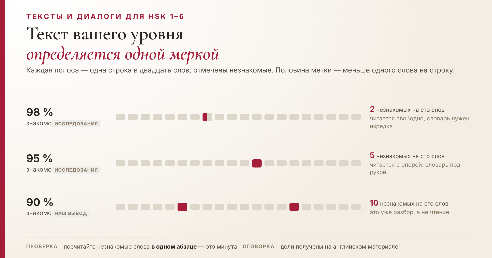
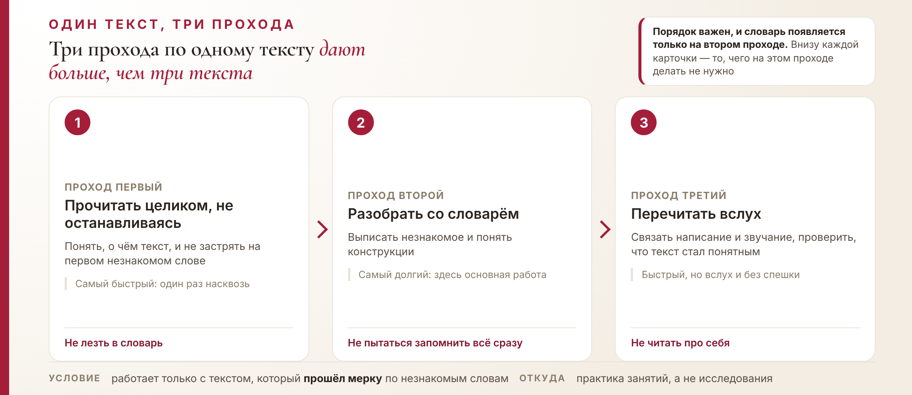

Экзамен
Тексты и диалоги для HSK 1–6: как понять, что текст вашего уровня


Подборку текстов искать не нужно. Нужна мерка, по которой любой найденный текст проверяется за минуту: сколько в нём незнакомых слов на сотню. Две — читается свободно, пять — со словарём, десять — это уже не чтение.
Разберу, как считать эту долю, как проходить один текст трижды, как отучаться от пиньиня и чем диалог отличается от связного текста. Зачем вообще сдавать этот экзамен, разобрано отдельно: сертификат HSK и зачем он нужен.
Короткий ответ: проверьте текст за минуту
Возьмите первый абзац и отметьте слова, которых не знаете. Не те, о которых догадываетесь по контексту, а те, которые видите впервые.
Если незнакомых около двух на сто слов — это ваш текст, читайте. Словарь понадобится изредка, и чтение не будет прерываться.
Если около пяти — читать тоже можно, но со словарём под рукой. Это рабочий вариант для занятий, хотя удовольствия от такого чтения меньше.
Если десять и больше — текст не подходит для чтения. С ним можно работать, но это будет разбор, а не чтение, и путать эти два занятия не стоит.
Считать до сотни при этом не нужно. В абзаце обычно пятьдесят-семьдесят слов, и трёх незнакомых в нём уже достаточно, чтобы насторожиться.
Вся статья дальше — про то, откуда взялись эти числа и что делать с текстом, который мерку прошёл.
Сколько незнакомых слов допустимо
Три ступени, между которыми меняется не скорость чтения, а само занятие.
| Знакомо | Незнакомых | Что происходит с текстом | Откуда |
|---|---|---|---|
| 98 % | 2 на сто слов | читается свободно, словарь нужен изредка | исследования |
| 95 % | 5 на сто слов | читается с опорой: словарь под рукой | исследования |
| 90 % | 10 на сто слов | это уже разбор, а не чтение | наш вывод |
Переведу в строки, так нагляднее. В строке из десяти слов при первой ступени приходится 0,2 незнакомого слова — то есть одно слово на пять строк. При второй 0,5 — примерно одно через строку. При третьей 1,0 — по незнакомому слову в каждой строке.
Разница между «одно на пять строк» и «одно в каждой строке» и есть разница между чтением и расшифровкой. В первом случае вы следите за смыслом, во втором — за словарём.
Откуда эти доли и чего они не учитывают
Две верхние ступени — из исследований по чтению на иностранном языке: доля в девяносто восемь процентов считается порогом самостоятельного чтения, девяносто пять — нижней границей, при которой чтение ещё возможно с опорой.
Третья ступень — наш вывод, а не данные. Что при девяноста процентах чтение превращается в разбор, я вывожу из практики занятий и помечаю это отдельно.
Главная оговорка, и она важнее самих чисел. Исследования проводились на английском материале. Перенос этих долей на китайский — наше допущение, а не измеренный факт, и говорю я об этом прямо, а не сноской внизу.
Вторая оговорка: часть исследователей резкого порога не находит вовсе — у них зависимость ближе к плавной. Это значит, что девяносто семь процентов не превращают чтение в муку, а девяносто девять не делают его мгновенным.
Поэтому числа стоит читать как ориентир, а не как выключатель. Мерка полезна тем, что превращает смутное «тяжеловато» в проверяемую величину, а не тем, что проводит точную границу.
И ещё одно, чего доли не учитывают: знакомое слово в незнакомом значении. Оно считается знакомым, а работает как незнакомое — поэтому счёт даёт нижнюю оценку трудности, а не точную.
Разбор и чтение — разные занятия
Это различение я считаю главным в статье, потому что из-за его отсутствия пропадает больше всего времени.
Чтение тренирует скорость, узнавание знакомого и понимание связей между частями текста. Оно требует, чтобы текст был почти понятен — иначе тренировать нечего.
Разбор тренирует другое: грамматику, новые слова, умение раскладывать сложное предложение. Для него как раз нужен текст труднее вашего уровня.
Оба занятия нужны. Беда начинается, когда трудный текст берут для чтения: человек получает усталость вместо скорости и делает вывод, что читать ему рано.
Практическое следствие. Держите два текста разом: один по мерке — для чтения, другой потруднее — для разбора. Тогда не придётся выбирать между скоростью и новым материалом.

Три прохода по одному тексту
Один текст, пройденный трижды, даёт больше, чем три текста по разу. Порядок проходов важен, и словарь появляется только на втором.
- Проход первый: прочитать целиком, не останавливаясь — понять, о чём текст, и не застрять на первом незнакомом слове.
- Проход второй: разобрать со словарём — выписать незнакомое и понять конструкции.
- Проход третий: перечитать вслух — связать написание и звучание, проверить, что текст стал понятным.
Про первый проход скажу отдельно, потому что его чаще всего пропускают. Соблазн заглянуть в словарь на первом же незнакомом слове и мешает чтению: вы перестаёте следить за смыслом. Договоритесь с собой, что первый проход идёт до конца, сколько бы слов в нём ни осталось непонятными.
Третий проход вслух связывает написание со звучанием: знак, прочитанный вслух, запоминается иначе, чем просмотренный глазами.
Как отучаться от пиньиня
На первых двух уровнях пиньинь напечатан над знаками, с HSK 3 его уже нет. Переход тяжёл ровно настолько, насколько поздно к нему готовятся.
- Закрыть строку пиньиня — листом бумаги или полоской, и это проще, чем кажется.
- Читать без подсказки знакомое — начиная с тех слов, которые уже узнаёте.
- Возвращаться к пиньиню для проверки — а не для чтения — это разные вещи.
Первый шаг самый действенный, и он самый простой. Физически закрыть подсказку проще, чем заставлять себя не смотреть: глаз всё равно соскальзывает на неё, пока она видна.
Знакомых знаков при этом обычно больше, чем кажется до первой попытки. Как устроено запоминание, разобрано отдельно: как запоминать иероглифы, а из чего знак собирается — здесь: порядок черт в китайских иероглифах.
Один ученик приносил на занятия тексты, которые выбирал сам, и каждый раз это была свежая новость, где он не понимал половину слов.
Разбирали такую новость минут сорок. К концу он уставал и делал один и тот же вывод: читать ему ещё рано, уровень не тот.
Однажды мы просто посчитали. Взяли первый абзац, отметили незнакомые слова — вышло около четверти. С таким текстом не работают: его расшифровывают.
Я дала ему другой текст, где незнакомых было два-три на абзац. Он прочёл страницу за десять минут и впервые сказал, что читать было интересно.
Уровень за эти десять минут не изменился. Изменился только текст — и вместе с ним исчезло ощущение, что язык не поддаётся.
С тех пор первое, что я делаю с принесённым текстом, — считаю незнакомые слова в одном абзаце. Это занимает минуту и решает, будем мы его читать или отложим.
Отдельно скажу про выбор «посложнее». Его делают из лучших побуждений: кажется, что трудный текст подтянет быстрее. На деле он отнимает время у чтения и отдаёт его словарю.
Вывод, который я делаю: ощущение «я не готов читать» чаще говорит о неверно выбранном тексте, чем об уровне человека. Проверяется это одним абзацем.
Какие тексты подходят на каждом уровне
Мерка одна для всех уровней — меняется не она, а то, сколько текстов ей соответствует. Словник растёт с 300 слов до 5400, то есть в 18 раз, и вместе с ним растёт выбор.
| Уровень | Слов | Что проходит мерку | Пиньинь |
|---|---|---|---|
| HSK 1 | 300 | учебные тексты и короткие диалоги по пройденным урокам | пиньинь есть |
| HSK 2 | 500 | те же учебные тексты, но длиннее, и диалоги на несколько реплик | пиньинь есть |
| HSK 3 | 1000 | учебные тексты без подсказок и первые адаптированные истории | пиньиня больше нет |
| HSK 4 | 2000 | адаптированные книги для изучающих язык | пиньиня нет |
| HSK 5 | 3600 | неадаптированные тексты на знакомые темы | пиньиня нет |
| HSK 6 | 5400 | почти любой текст, включая публицистику | пиньиня нет |
Оговорюсь сразу: правый столбец про тип текста — наш вывод из практики, а не измеренная величина. Числа словника взяты из действующего стандарта, а что при таком запасе проходит мерку, я вывожу из занятий. Как меняются требования по уровням, разобрано здесь: требования к количеству слов по уровням.
Про первые два уровня. Искать «настоящие» тексты там бесполезно: при запасе в 300 слов мерке не соответствует почти ничего, кроме учебных текстов по пройденным урокам. Это не ограничение уровня, а арифметика. Разбор первого уровня у нас здесь: HSK 1: как сдать первый уровень, а первые слова — здесь: китайские слова для начинающих.
Про третий уровень — тот самый, где пропадает пиньинь и появляются первые адаптированные истории. Что ещё меняется на нём, разобрано здесь: HSK 3: как сдать без пиньиня, а проверить себя можно пробником: пробный тест HSK 3.
Про четвёртый и книги. Запрос «книги на китайском для HSK 4» в основном про адаптированные издания — те, где словарь сознательно ограничен. Какие книги стоит читать и с какого уровня, у нас разобрано отдельно: лучшие китайские книги. Разбор самого уровня — здесь: HSK 4 в 2026: разбор экзамена.
Про пятый и шестой. Здесь мерке начинают соответствовать обычные тексты, и выбор перестаёт быть проблемой. Проблемой становится скорость — на шестом уровне особенно: текстов больше, они длиннее, а времени на них даётся не больше. Разбор пятого уровня: HSK 5: как сдать «университетский» экзамен.
Диалоги: чем они отличаются от текстов
Диалог — это не короткий текст. Работа с ним устроена иначе, и подменять одно другим не стоит.
| Вопрос | Диалог | Связный текст |
|---|---|---|
| Что держит внимание | кто говорит и кому | как связаны части текста |
| Чего в нём больше | частиц, обращений и коротких реплик | длинных предложений и связок |
| Что тренирует | узнавание на слух и интонацию | скорость и понимание связей |
| Где пригодится на экзамене | раздел аудирования | раздел чтения |
Отсюда простое правило. Диалоги читают вслух и по ролям, а связные тексты — глазами и на скорость. Диалог, прочитанный молча, теряет половину смысла: в нём важно, кто говорит и с какой интонацией.
Есть и обратная сторона: диалог прощает незнакомые слова лучше связного текста. Реплики короткие, собеседник часто переспрашивает, и пропущенное слово восстанавливается из ответа — поэтому мерка на диалогах работает мягче.
На первом уровне диалог вообще главный вид текста: учебные тексты там короткие, а диалоги по пройденным урокам дают и лексику, и привычку к звучанию сразу.
На экзамене это различие тоже видно. Диалоги достаются разделу аудирования, связные тексты — разделу чтения, и готовятся к ним по-разному: первые слушают, вторые читают на время.
Готовых диалогов мы не выкладываем — чужих текстов блог не перепечатывает. Но устроены они одинаково: две-три реплики на знакомую тему, вопрос и ответ, обращение в начале. Такой диалог несложно собрать и самому из слов пройденного урока — и это, кстати, лучшее упражнение, чем чтение готового.
Частые ошибки
- Брать текст «посложнее, чтобы подтянуться». Трудный текст отнимает время у чтения и отдаёт его словарю.
- Лезть в словарь на первом незнакомом слове. Первый проход идёт целиком, иначе чтения не получается вовсе.
- Читать каждый текст по разу. Три прохода по одному дают больше, чем один проход по трём.
- Тянуть с отвыканием от пиньиня до третьего уровня. Там подсказки уже нет, и привыкать приходится на экзаменационных заданиях.
- Читать диалоги молча. В них половина смысла в том, кто говорит и как, а это слышно только вслух.
Чего в статье нет намеренно
- Самих текстов и диалогов. Чужих текстов блог не перепечатывает.
- Названий сайтов, приложений и сборников. Внешних ссылок блог не ставит, а мерка работает с любым найденным текстом.
- Ссылок на файлы для скачивания и магазинов. По той же причине.
- Списка книг по уровням. Он у нас в отдельной статье, ссылка стоит в тексте.
- Разбора раздела чтения на экзамене. Он разобран в статьях по уровням и в пробниках.
И ещё об одном умолчании. Я не называю «правильное» число текстов в неделю: оно зависит от их длины, от уровня и от того, сколько у вас времени. Мерка отвечает на вопрос «какой текст», а не «сколько».
И не называю точного числа слов, при котором «уже можно читать настоящее». Такой границы нет: она зависит от темы текста не меньше, чем от запаса слов.
Частые вопросы (FAQ)
Как понять, что текст моего уровня?
Посчитайте незнакомые слова в одном абзаце. Если их около двух на сто слов, текст читается свободно. Если около пяти — читать можно, но со словарём под рукой. Если десять и больше, это уже не чтение, а разбор, и для тренировки чтения такой текст не подходит.
Сколько незнакомых слов допустимо?
Две позиции на сто слов — это свободное чтение, пять — чтение с опорой. В строке из десяти слов это меньше одного незнакомого в первом случае и примерно одно через строку во втором. Доли взяты из исследований по чтению на иностранном языке.
Что делать, если незнакомых слишком много?
Взять текст проще. Это не поражение и не признак слабого уровня: трудный текст отнимает время у чтения и отдаёт его словарю. Разбирать сложное тоже полезно, но это другое занятие, и смешивать их не стоит.
Как читать без пиньиня?
Тремя шагами. Закрыть строку пиньиня листом бумаги, читать без подсказки сначала те слова, которые уже узнаёте, и возвращаться к пиньиню только для проверки, а не для чтения. Пиньинь над знаками пропадает с третьего уровня, так что привыкать стоит заранее.
Сколько раз перечитывать текст?
Один текст стоит пройти трижды: первый раз целиком и без остановок, второй — со словарём, третий — вслух. Три прохода по одному тексту дают больше, чем один проход по трём разным.
Где брать тексты своего уровня?
На первых двух уровнях — учебные тексты и диалоги по пройденным урокам: ничего другого мерке пока не соответствует. С третьего уровня подходят адаптированные истории, с четвёртого — адаптированные книги, с пятого — обычные тексты на знакомые темы. Конкретных площадок мы не называем, но проверить любой найденный текст можно той же меркой.
И напоследок то, что важнее любого числа выше. Чтение — единственная часть подготовки, которую почти целиком можно устроить себе самому: текст либо понятен, либо нет, и проверить это можно без преподавателя. Поэтому мерку стоит взять в привычку: минута счёта в начале бережёт часы, потраченные на расшифровку не того текста. А если хочется, чтобы тексты подбирали под ваш уровень и разбирали вместе с вами, запишитесь на бесплатный урок — начнём с того, что измерим ваш уровень.
Источники
- Доли в девяносто восемь и девяносто пять процентов знакомых слов — по исследованиям чтения на иностранном языке; девяносто восемь считается порогом самостоятельного чтения, девяносто пять — нижней границей чтения с опорой.
- Исследования проводились на английском материале. Перенос долей на китайский — наше допущение, названное в тексте прямо.
- То, что при девяноста процентах чтение превращается в разбор, — наш вывод из практики занятий, а не данные исследований.
- То, что часть исследователей резкого порога не находит, приведено по тем же работам и сказано в тексте.
- Словник по уровням — 300, 500, 1000, 2000, 3600 и 5400 слов накопительно — по действующему стандарту, из тех же данных, на которых построены наши разборы уровней.
- Какой тип текста проходит мерку на каждом уровне — наш вывод из занятий, а не измеренная величина; помечено и в таблице.
- Самих текстов, названий площадок, ссылок на файлы и магазинов не публикую.
- Случай с учеником, который приносил новости не своего уровня, взят из занятий Kitai School; имя не привожу.